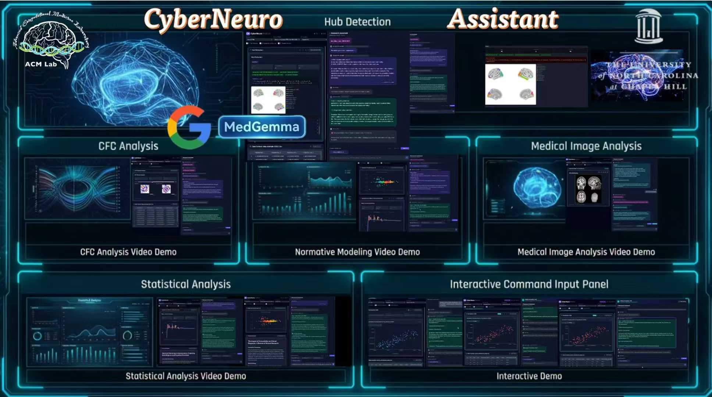
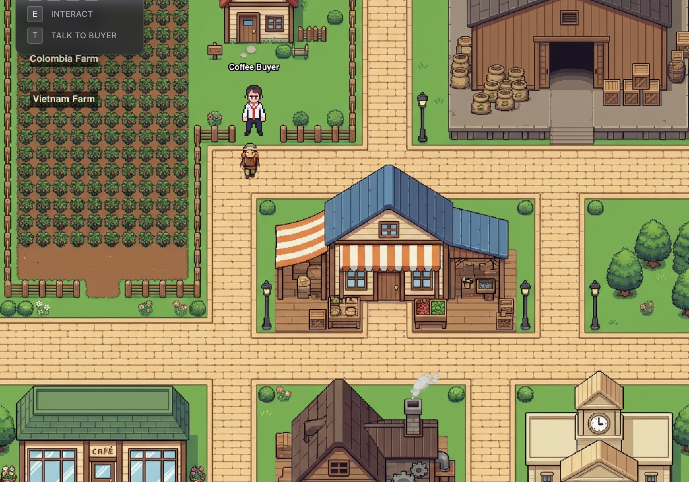
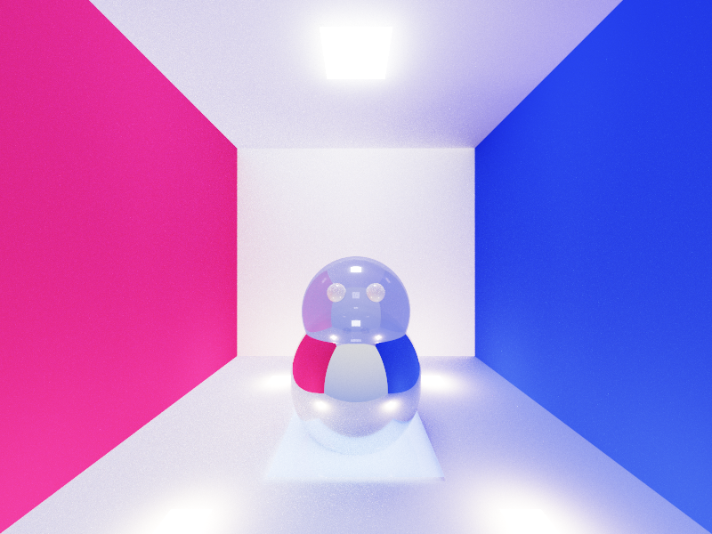
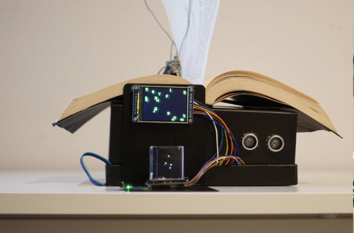

Jiaqi Wu 吴佳麒
Junior double majoring in Math-CS and Cognitive Science (ML & Neural Computation), passionate about building intelligent systems through deep learning, multi-agent systems, and cognitive neuroscience. Read a recent thought on ML & world models here.
Flagship Projects
Each project represents a deep investment in solving real problems with intelligent systems.

ResearchCyberNeuro
Brain network analysis — from workflow stacking to intelligent decision-making.
Try Demo →CyberNeuro — Intelligent Brain Network Analysis
4-layer intelligent agent adaptive orchestration with full-pipeline quality assurance. Every analysis chain is explainable, reproducible, and traceable. The goal is not to replace researchers, but to maximize their decision efficiency and reliability.

AI / DevTrai — AI-Powered Education
A full-stack educational platform featuring AI-driven tutoring, smart scheduling, and personalized learning paths. Built with modern web technologies and deployed on Vercel.

CGRobot in a Box — Ray Tracing
A physically-based ray tracing implementation in C++ featuring reflection, refraction, soft shadows, and global illumination. Built as a computer graphics course project at UCSD.

ArtFine-t_ne — MECHANICA X MORTALIS
A creative exploration at the intersection of generative AI and artistic expression. Blending mechanical precision with organic form to create a unique visual narrative.
Thoughts & Hypotheses
Raw ideas on AI, mathematics, and cognitive science — unfiltered.
A collection of evolving thoughts, hypotheses, and quick notes at the frontier of intelligence research.
Get in Touch
Open to research collaborations, internships, and ambitious projects.